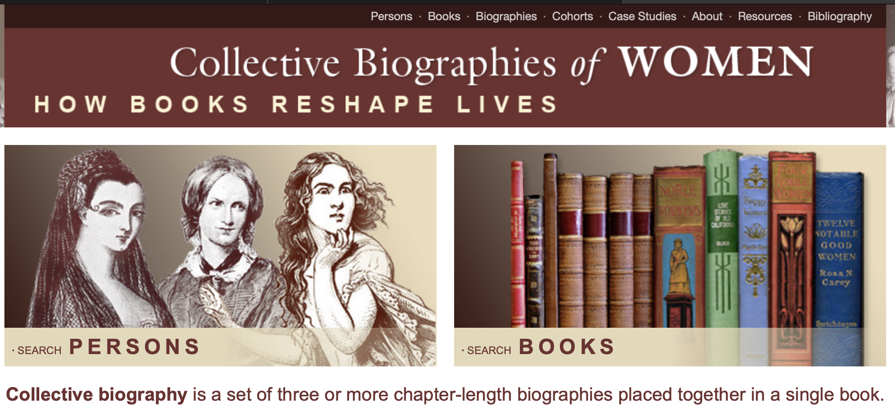

Wikipedia Research: Demographic Profiling

Since 2022 I have collaborated with PI
Lane Rasberry at the UVA School of Data Science on various projects analyzing Wikipedia and Wikidata. Specifically, we have drafted a paper concerning the ethics of demographic profiling on the websites: how they categorize and list (potentially sensitive) information about human beings. We were supported by a Sloan Foundation grant. More recently, I have turned towards doing my own independent research on Wikipedia—I'm currently working on a paper studying how "clarity" is pursued and achieved by Wiki editors.
Scholia
I worked with Lane to write up a project summary for Scholia for Software, a portion of the broader project called Scholia. The project aims to track, document, and make publicly available data on academic citations. The initiative that I helped write a report on specifically targeted increasing citational information for software, ensuring that software creators whose work was used in academic papers could be properly credited.
Data Points
In November 2022, Lane and I recorded an
episode of a podcast produced by the UVA School of Data Science. We discussed our work with the demographic profiling, but also our creation of a Data Model for the human being.